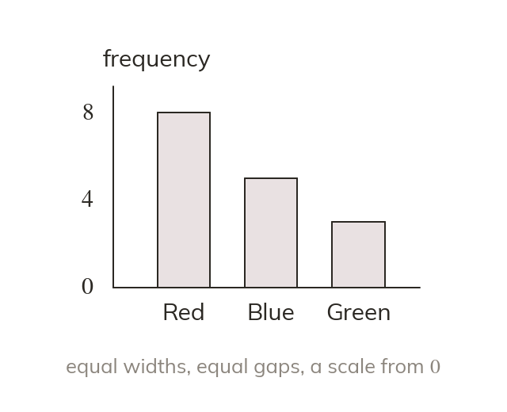

What a bar chart shows
Bar height shows frequency. Bars have equal widths and equal gaps, on a scale from
Label both axes and mark the frequency scale.
A bar chart shows frequency by bar height, with every bar the same width and an equal gap between bars, plotted against a frequency scale that goes up in equal steps from
Both axes need a label, and the frequency axis needs its scale marked.
Both axes need a label, and the frequency axis needs its scale marked.